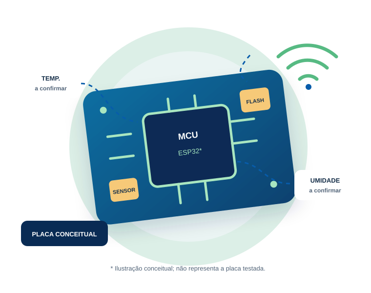

Mapear
Identificar componentes, interfaces e fluxos.
Projeto acadêmico · Hardware Hacking
Uma avaliação estruturada do NexaSense, dispositivo IoT de monitoramento ambiental descrito no estudo de caso NexaHome.
Protótipo conceitual para fins acadêmicos. A análise da placa real depende de acesso ao hardware, ao firmware e ao ambiente autorizado.

01 / O projeto
O enunciado descreve um microcontrolador da família ESP32, sensores de temperatura e umidade, firmware e conectividade Wi-Fi.
O trabalho organiza a avaliação das interfaces físicas, do armazenamento e firmware, do mecanismo de atualização e das comunicações.
Ver matriz de riscos e estado dos achadosIdentificar componentes, interfaces e fluxos.
Registrar origem e integridade do firmware.
Reproduzir condições no laboratório autorizado.
Priorizar controles ligados às evidências.
Uma interface não é um achado por si só.
Evidência conecta exposição a risco.
02 / Arquitetura de referência
Modelo baseado no enunciado. MCU, interfaces, protocolos e serviço precisam ser confirmados na placa e no firmware do laboratório.
Temperatura
Umidade
ESP32 indicado
Memória a confirmar
Leitura, logs
e atualização
Wi-Fi
Protocolo a confirmar
Broker/endpoint
a confirmar
Veja o diagrama SVG. “A confirmar” separa o cenário da inspeção real.
03 / Superfície de ataque
Verificar UART, JTAG, SPI, I²C, USB, pads e pontos de teste; avaliar acessibilidade e proteções.
INSPEÇÃO PENDENTEPreservar o original, calcular SHA-256 e analisar formato, partições, strings e configurações com dados redigidos.
IMAGEM NÃO FORNECIDAExaminar autenticação, validação criptográfica, anti-rollback e recuperação após falhas.
MECANISMO A CONFIRMARCapturar tráfego em rede isolada e avaliar destinos, conteúdo, autenticação, confidencialidade e integridade.
CAPTURA PENDENTE04 / Riscos e demonstração
Cenários para orientar os testes; sem evidência do dispositivo autorizado, não são achados do NexaSense.
Se imagens não assinadas puderem ser instaladas, código não autorizado pode alterar leituras ou comprometer o dispositivo.
O risco depende do acesso físico, dos dados expostos e das proteções da interface observada.
Se credenciais ou comandos trafegarem sem proteção, um observador local pode lê-los ou alterá-los.
DEMONSTRAÇÃO DIDÁTICA
O script aceita bytes sintéticos sem verificar assinatura. Ilustra uma classe de erro; não testa a placa real.
05 / Caso público
Um estudo acadêmico relatou em sensores PurpleAir com ESP8266 uma interface UART que permitia acesso físico a firmware e credenciais Wi-Fi, além de atualização OTA sem autenticação/verificação adequada naquele dispositivo.
O caso recomenda avaliar hardware, dados e atualização em conjunto. É referência externa, não evidência contra a NexaHome.
Ler o estudo primário ↗06 / Próxima versão
Secure Boot e Flash Encryption conforme a variante ESP32 e o plano de provisionamento.
Validar assinatura, versão, anti-rollback e recuperação segura.
Credenciais individuais, logs sem segredos e debug restrito.
TLS validado, identidade por dispositivo, integridade e segmentação.
Referências: NISTIR 8259A, ETSI EN 303 645, OWASP ISTG, MITRE EMB3D e documentação Espressif.
Plano de hardening ↗07 / Materiais
Relatório e registros organizados no repositório; as evidências reais dependem do laboratório.